Graphical Representations of Data
Contents
Graphical Representations of Data¶
Data visualisation is more than just putting numbers on a chart for everyone to see.
In order to be successful in data visualisation, you need to have a solid foundation in the field.
Understanding why some data visualisation methods are more effective than others is based on the psychology of visual perception.
Every time you create a plot, you can use a variety of psychological concepts.
This lecture is by no means exhaustive it merely tries to highlight the importance of paying attention to the selections you make when you try to communicate ideas using visualisations
The Building Blocks of Visualization¶
A visualization is composed of a set of visual items representing pieces of information. For each item in a visualization, we may use a number of visual channels to represent that item. Different visual channels can be used to represent the same item in different ways and to support different objectives.
The visual channels we can manipulate¶

Visual channels grouping¶
The visual medium is powerful in conveying specific sorts of information.
Using colour or texture to distinguish between categorical variables, for example, is more effective for illustrating qualitative data than quantitative data.
Cultural associations with more specific conceptions also influence immediate recognition.
On the other hand, the position is excellent at representing quantitative data, but it isn’t as effective at identifying categories.
Associative:¶
Allowing all elements of a variable associated with some category with different values to be put together
Texture,
Colour,
Orientation,
Shape
connection
containment
Selective¶
Attending to one type of data, figuring out where visual items in the same category are, and ignoring others.
size,
brightness,
transparency
texture,
colour,
orientation
Ordered¶
Communicating visual ranking of the data
planer
size,
brightness,
density,
Curvature
depth
Quantitative:¶
Communicating visual ratios without the need to inspect a legend
Planer,
Size
Brightness
But everything is relative to context¶
Consider the following example¶
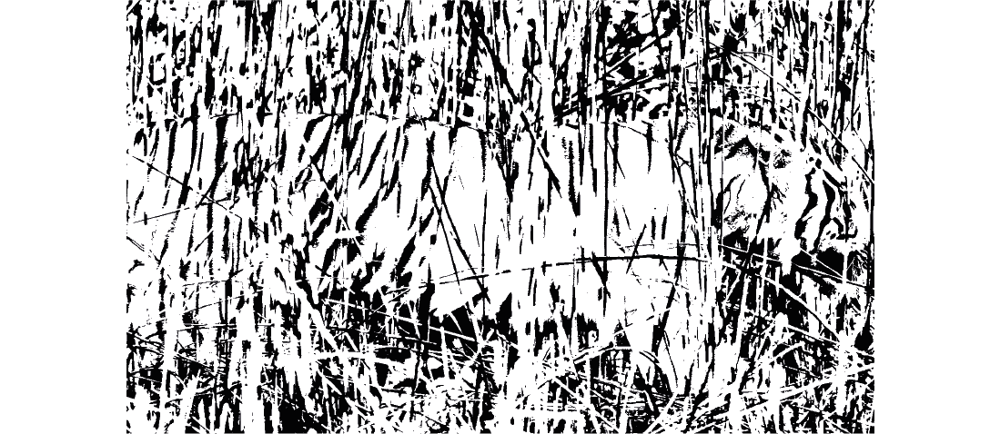
Or another competing example¶
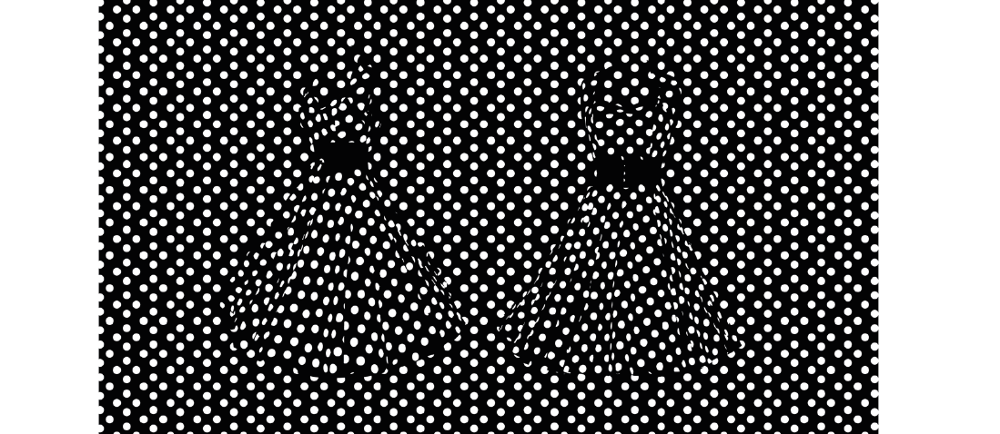
Adding context¶
When I give the context or change the ratio of stimulation the message becomes focused
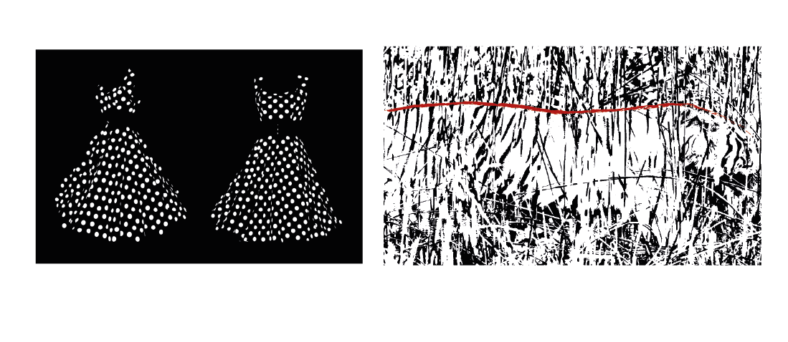
Gestalt¶
Gestalt is an important theory in human psychology.
It was created in the early 20th century by German psychologists Max Wertheimer (1880–1943), Kurt Koffka (1886–1941), and Wolfgang Kohler (1887–1967).
The theory is about how our brains automatically create structure.
It changes the meaning of the information presented in a big way. The German word “gestalt” means “unified whole” in English.
It is often used to describe the idea that the whole is greater than the sum of its parts.
Gestalt principles¶
Gestalt principles explain how the brain automatically creates structure when it looks at something.
This is why you can read the letters at the beginning of this article that are in the wrong order because your brain already knows how each word in that sentence is put together.
Gestalt theory is a scientific explanation of how humans naturally look for patterns.
Visual artists can use this theory to create images that communicate information in the most effective way.
Designers don’t just use their intuition and imagination to make graphics and user experiences.
Gestalt principles are used by most designers, whether they are aware of it or not.
And whenever you create a data visualization you apply some of these principles (in a useful of destructive way)
Some low level principles¶
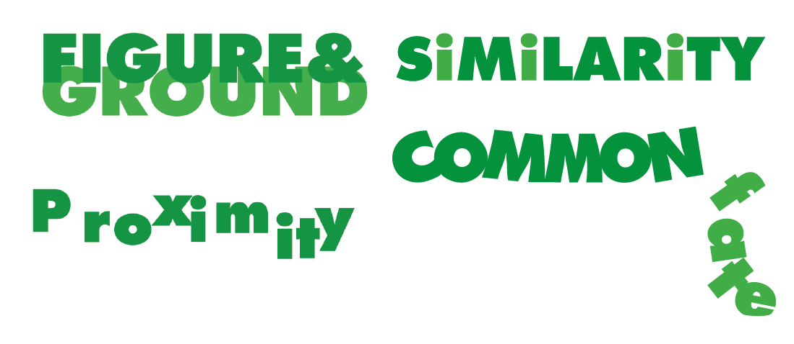
And some higher level principles¶
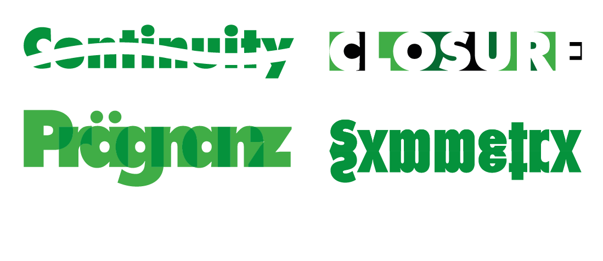
Visual system is modular¶
We need to remember that the visual system is one of the most modular areas in the cortex 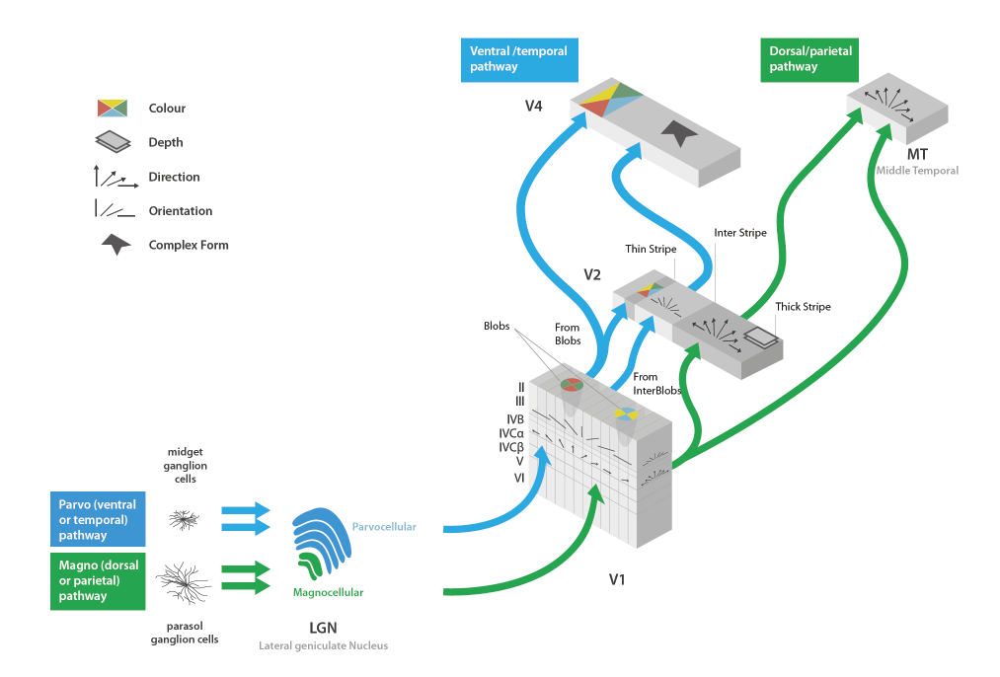
And can be manipulated quite easily¶
consider this grid¶
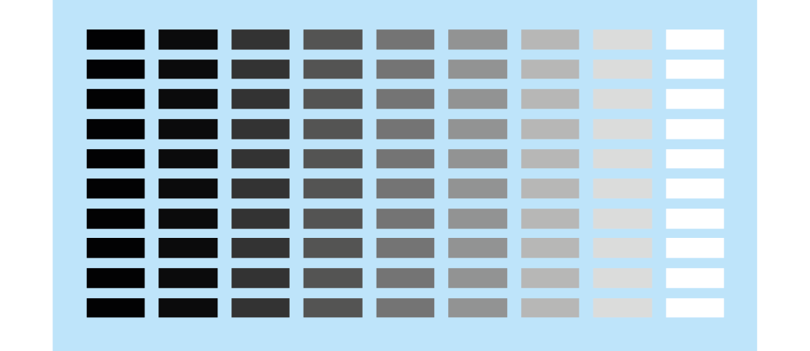
Now consider this gradient¶
If we combine these we get an optical illusion that implies direction even though no direction exists¶
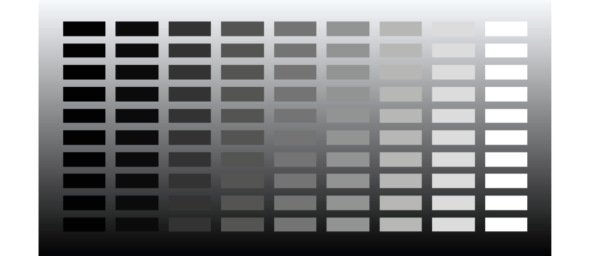
Rotating the gradient changes the direction¶
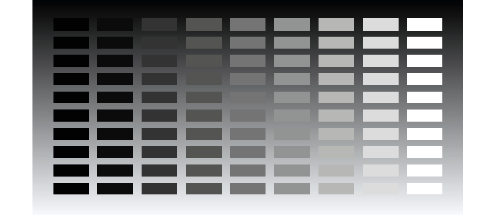
We can manipulate local perception as effectively¶
A neat example of this builds on limitations of v4
The foreground hue used for these two examples is exactly the same
The choice of different background hues changes our perception of those
But this is obviously a global effect
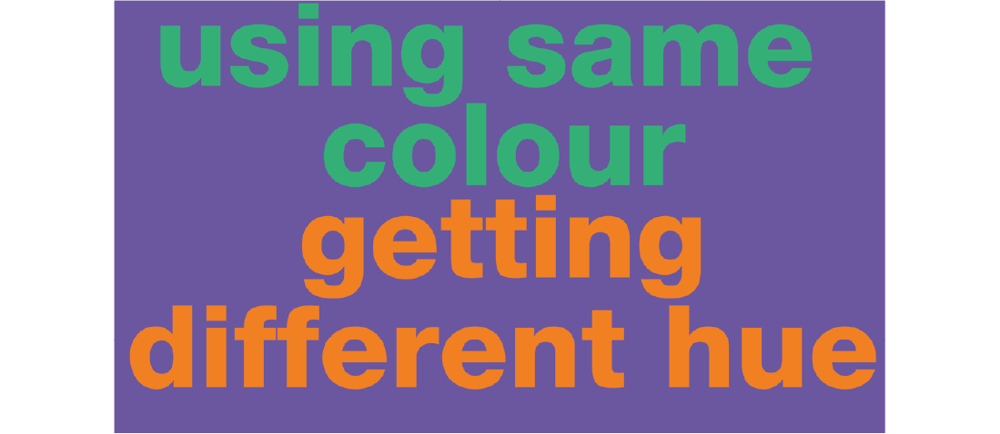
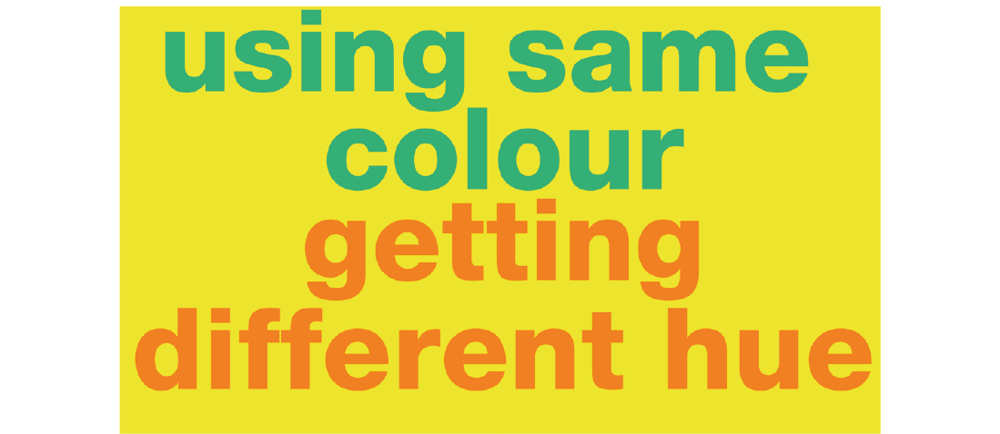
Now consider this example¶
Different local masking (or the lack of it) transformed the low frequency perception of the hues to a larger degree
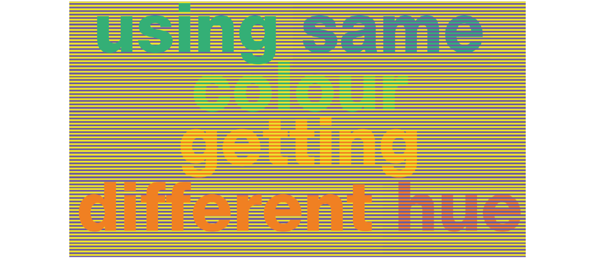
The case of color¶
Over the years color perception has spawned many different theories and color systems
Here are four toy figures to illustrate the different ones
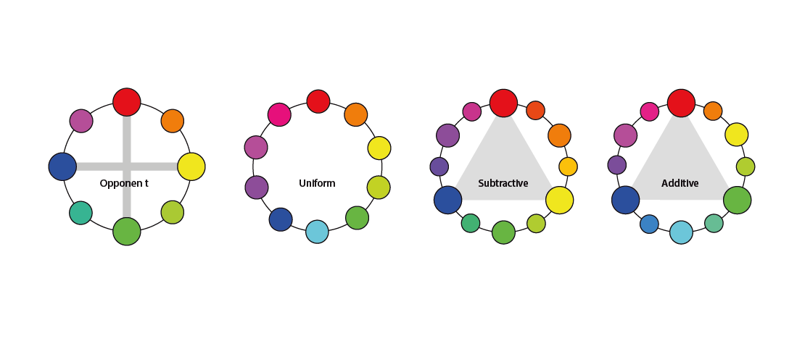
Colour mixtures and selections¶
Using the computerised version of the opponent system we can derive several harmonic rules that can be used to simplify the complex space of color selection
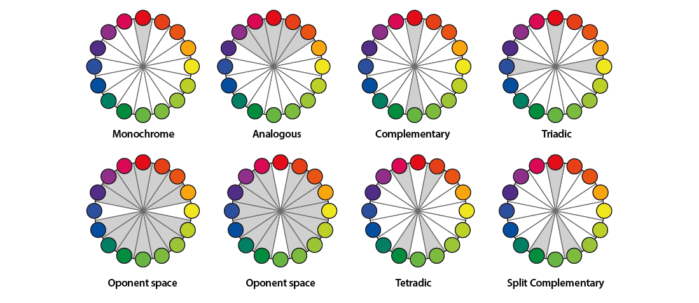
To make this point clear lets apply these rules to some fixed set of shapes¶
Monochromatic harmony¶
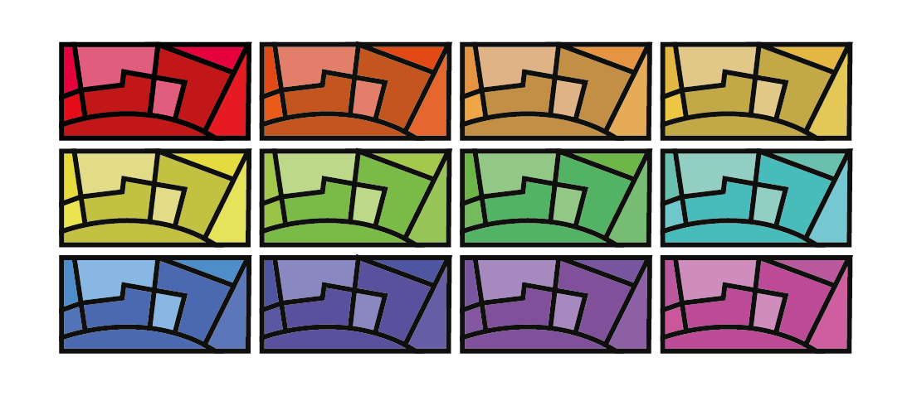
Analogous harmony¶
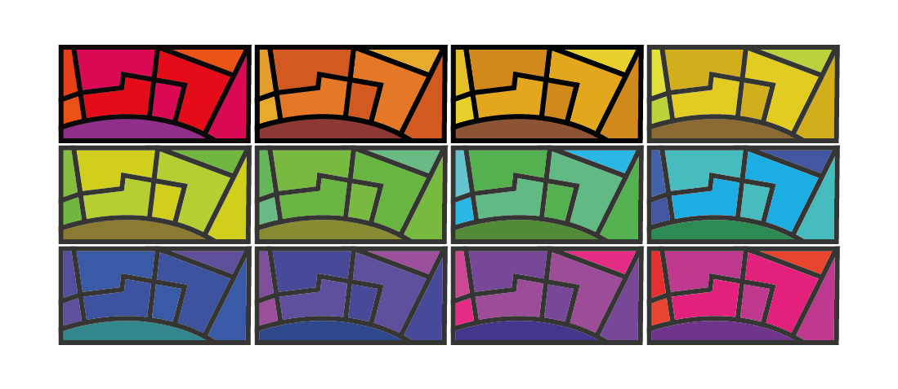
Complementary harmony¶
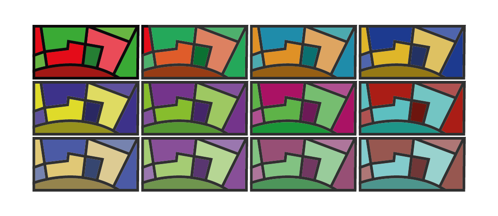
Triadic harmony¶
Links to expand your understanding¶
For those interested in learning more…